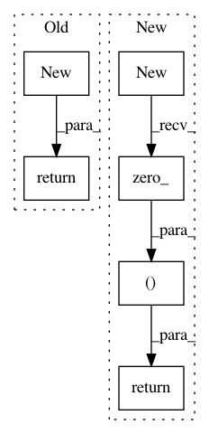

0e3ecd7a2a4c544de6228ed466c29992f65def8e,cuda_functional.py,SRU_Compute_GPU,backward,#SRU_Compute_GPU#Any#Any#,539
Before Change
init_ = x.new(ncols).zero_() if init is None else init
grad_u = u.new(*u.size()).zero_()
grad_wc = x.new(2, batch, d*bidir)
grad_bias = x.new(2, batch, d*bidir)
grad_init = x.new(batch, d*bidir)
// For DEBUG
// size = (length, batch, x.size(-1)) if x.dim() == 3 else (batch, x.size(-1))
// grad_x = x.new(*x.size()) if k_ == 3 else x.new(*size).zero_()
// Normal use
grad_x = x.new(*x.size()).zero_() if skip_type > 0 and k_ == 3 else None
if skip_type > 0 and k_ == 3:
x_ptr = x.contiguous()*scale_x if scale_x != 1 else x.contiguous()
x_ptr = x_ptr.data_ptr()
else:
x_ptr = 0
stream, _, _, bwd_func, bibwd_func = self.get_functions()
FUNC = bwd_func if not self.bidirectional else bibwd_func
FUNC(args=[
u.contiguous().data_ptr(),
x_ptr,
weight_c.data_ptr(),
bias.data_ptr(),
init_.contiguous().data_ptr(),
mask_h.data_ptr() if mask_h is not None else 0,
mask_pad.data_ptr() if mask_pad is not None else 0,
c.data_ptr(),
grad_h.contiguous().data_ptr(),
grad_last.contiguous().data_ptr(),
length,
batch,
d,
k_,
grad_u.data_ptr(),
grad_x.data_ptr() if skip_type > 0 and k_ == 3 else 0,
grad_wc.data_ptr(),
grad_bias.data_ptr(),
grad_init.data_ptr(),
self.activation_type,
skip_type],
block=(thread_per_block, 1, 1),
grid=(num_block, 1, 1),
stream=stream
)
if skip_type > 0 and k_ == 3 and scale_x != 1:
grad_x.mul_(scale_x)
return grad_u, grad_x, grad_wc.sum(1).view(-1), grad_bias.sum(1).view(-1), grad_init, None
After Change
init_ = x.new(ncols).zero_() if init is None else init
grad_u = u.new(*u.size()).zero_()
grad_wc = x.new(2*bidir*d).zero_()
grad_bias = x.new(2*bidir*d).zero_()
grad_init = x.new(batch, d*bidir)
grad_x = x.new(*x.size()).zero_() if skip_type > 0 and k_ == 3 else None
if skip_type > 0 and k_ == 3:
x_ptr = x.contiguous()*scale_x if scale_x != 1 else x.contiguous()
x_ptr = x_ptr.data_ptr()
else:
x_ptr = 0
stream, _, _, bwd_func, bibwd_func = self.get_functions()
FUNC = bwd_func if not self.bidirectional else bibwd_func
FUNC(args=[
u.contiguous().data_ptr(),
x_ptr,
weight_c.data_ptr(),
bias.data_ptr(),
init_.contiguous().data_ptr(),
mask_h.data_ptr() if mask_h is not None else 0,
mask_pad.data_ptr() if mask_pad is not None else 0,
c.data_ptr(),
grad_h.contiguous().data_ptr(),
grad_last.contiguous().data_ptr(),
length,
batch,
d,
k_,
grad_u.data_ptr(),
grad_x.data_ptr() if skip_type > 0 and k_ == 3 else 0,
grad_wc.data_ptr(),
grad_bias.data_ptr(),
grad_init.data_ptr(),
self.activation_type,
skip_type],
block=(thread_per_block, 1, 1),
grid=(num_block, 1, 1),
stream=stream
)
if skip_type > 0 and k_ == 3 and scale_x != 1:
grad_x.mul_(scale_x)
return grad_u, grad_x, grad_wc, grad_bias, grad_init, None
In pattern: SUPERPATTERN
Frequency: 3
Non-data size: 6
Instances
Project Name: asappresearch/sru
Commit Name: 0e3ecd7a2a4c544de6228ed466c29992f65def8e
Time: 2018-07-25
Author: hp@asapp.com
File Name: cuda_functional.py
Class Name: SRU_Compute_GPU
Method Name: backward
Project Name: NVIDIA/flownet2-pytorch
Commit Name: dafdc9b5cb8fa4c65285aad22b1429549d06d71a
Time: 2018-02-04
Author: chenkaidev@gmail.com
File Name: networks/resample2d_package/functions/resample2d.py
Class Name: Resample2dFunction
Method Name: backward
Project Name: NVIDIA/flownet2-pytorch
Commit Name: dafdc9b5cb8fa4c65285aad22b1429549d06d71a
Time: 2018-02-04
Author: chenkaidev@gmail.com
File Name: networks/channelnorm_package/functions/channelnorm.py
Class Name: ChannelNormFunction
Method Name: backward